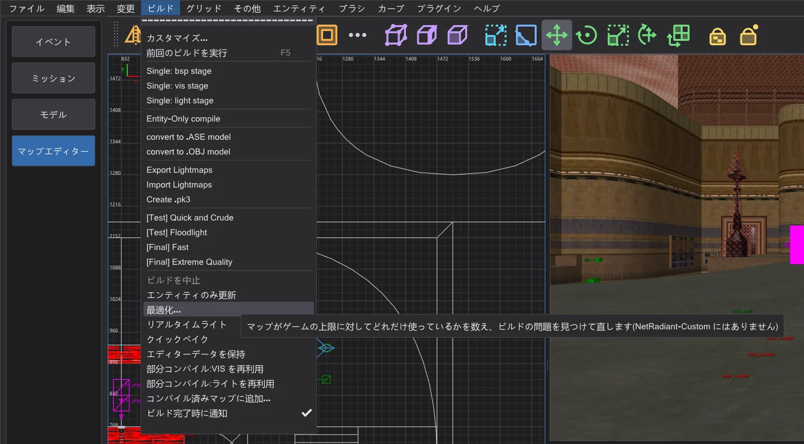
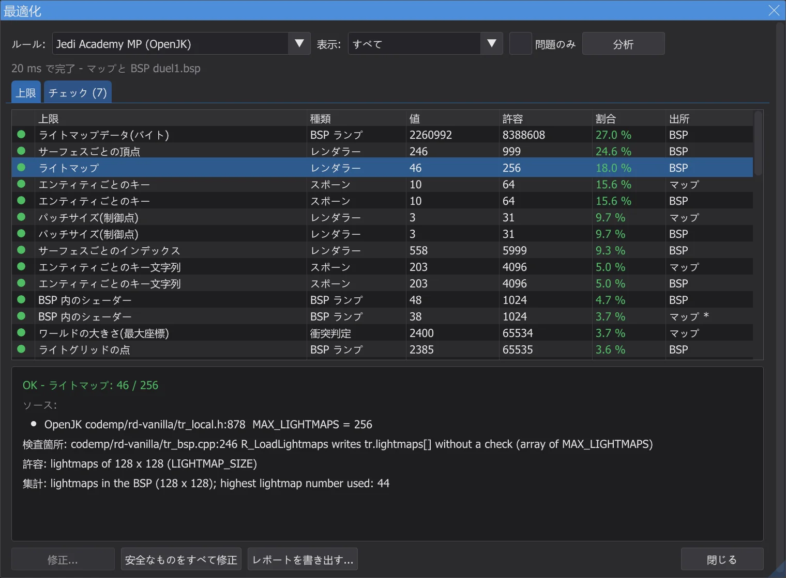
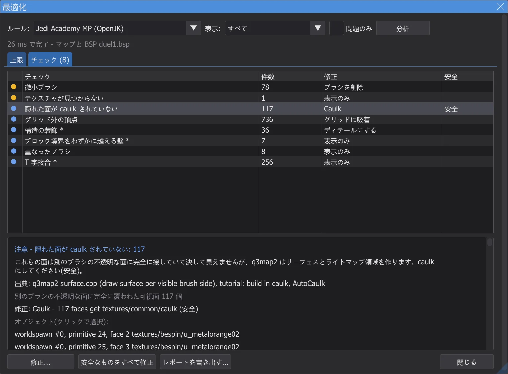
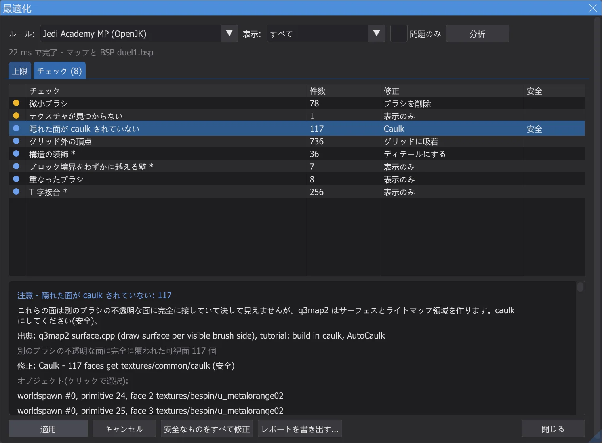
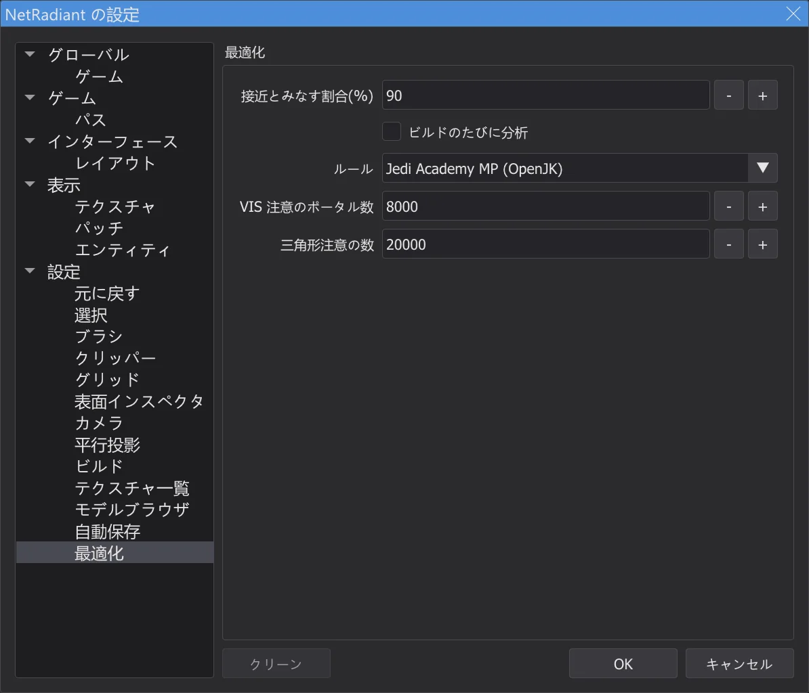

マップエディター:最適化ツールと上限
ビルド > 最適化 は、マップが使っている量を Jedi Academy・Movie Duels・Jedi Outcast のすべての上限(いずれもエンジンのソースコードから取得)と比べ、リーク、caulk されていない隠れた面、衝突平面が多すぎるパッチなどのビルド上の問題を見つけ、その多くをボタン一つで修正します。
最適化ツールを開く#

- 1
ビルド > 最適化 で 最適化 ウィンドウが開き、バックグラウンドでマップを分析します(最大級のマップでも可)。その間もエディターは操作できます。最後にコンソールに要約が表示されます。
- 2
ルール: で上限の種類を選びます。自動 はエディターが使っているゲーム(Jedi Academy、Movie Duels、Jedi Outcast)に合わせます。Jedi Academy のマルチプレイも選べます。
- 3
マップをビルドした場合(マップエディター:マップのビルド を参照)や、コンパイル済みマップとして開いた場合(マップエディター:完成したマップを開いて変更する)は、.bsp も分析します。ライトグリッド、ライトマップ、可視性、1 視点あたりの三角形数、最後の BSP 段階のリークラインです。.bsp がなければマップだけを数えます。
- 4
設定 の 最適化 ページで、ビルドのたびに最適化ツールを自動で実行できます。問題があるときだけウィンドウが開きます。
上限#

- OK:上限を十分に下回っています。接近:上限の 90% 以上(変更可)。超過:ゲームが強制する上限を超えています。マップが読み込めない、クラッシュする、または何かが失われます。
- 注意:.bsp ファイルの形式上の上限(
qfiles.hのMAX_MAP_*)で、エンジンも q3map2 もチェックしません。Raven 自身のマップがいくつも超えているため、最適化ツールはこれを「超過」とは判定せず、注意として示すだけです。 - * の付いた値は推定値です(例:スポーン後に残るエンティティ数や、モデル 1 つのコスト)。出所 列は、値をマップで数えたか .bsp で数えたかを示します。
- 上限をクリックすると、マップ内で多く使っている対象が選択され、ビューがその位置に移動します。
code/、マルチプレイ codemp/)、Movie Duels は Movie Duels のソース、Jedi Outcast は JK2_MODE 付きの OpenJK と codeJK2/ です。Mod が上限を引き上げている場合でも、最適化ツールはより厳しいバニラの値で確認します(例:パッチ平面は 4096 ではなく 2048)。ページ末尾の表に、各上限のファイルと行を載せています。テスト karte_grenzen がこれらの行をソースから読み直します。チェックと修正#

- 1
検出結果をクリックすると対象オブジェクトが選択され、2D ビューとカメラがその位置に移動します。
- 2
修正 で何が変わるかを表示し、適用 で実行します。修正はそれぞれ 元に戻す の 1 ステップで、修正後にマップを数え直します。検出結果は消えるか少なくなります。

適用する前の修正のプレビュー。 - 3
安全なものをすべて修正 は、安全 と示された修正(マップの見た目や遊び方を変えないもの)だけを、1 回の元に戻すステップで適用します。
- 4
worldspawn のキーを設定する修正(ライトグリッド、ライトマップ)は次のビルドで反映されます。コンソールにもそう表示されます。レポートを書き出す は、出典を含むすべての内容をテキストファイルに書き出します。

| チェック | 意味 | 修正 | 安全 |
|---|---|---|---|
| リーク | マップが密閉されていません。q3map2 がエンティティから虚空への経路(リーク線)を見つけました。VIS とライティングには閉じた外殻が必要です。「ファイル > Pointfile」でリークを表示して隙間をふさいでください。 | 表示のみ | - |
| リーク線上のディテールブラシ | ディテールブラシはマップを密閉しません。リーク線がこれらを通っています。構造にするか、その裏側をふさいでください。 | 構造にする | - |
| 隠れた面が caulk されていない | これらの面は別のブラシの不透明な面に完全に接していて決して見えませんが、q3map2 はサーフェスとライトマップ領域を作ります。caulk にしてください(安全)。 | Caulk | 安全 |
| 退化したブラシ | 形状が無効なブラシです。q3map2 は捨てます。マップを散らかすだけです。削除してください(安全)。 | ブラシを削除 | 安全 |
| 微小ブラシ | 1 ユニットより薄いブラシは BSP の精度問題と分割の原因になります。削除するか厚くしてください。 | ブラシを削除 | - |
| グリッド外の頂点 | 整数でないブラシの角は、q3map2 が平面を丸めた後に割れやちらつきの原因になります。1 単位グリッドに吸着してください(丸め誤差だけなら安全)。 | グリッドに吸着 | 安全 |
| ディテール指定の hint / areaportal | hint と areaportal のブラシは構造でなければなりません。q3map2 は「Mixed detail and structural」と警告し、結局構造として扱います。構造にしてください(安全)。 | 構造にする | 安全 |
| エンティティ内の areaportal | q3map2 は areaportal をワールドでしか許さず(「areaportals only allowed in world」)、無視します。ブラシを worldspawn に移してください。 | 表示のみ | - |
| 構造の装飾 | 小さい・薄い・斜めの構造ブラシは BSP を多くのリーフとポータルに分割します(VIS が遅くなる)。提案: ディテールにする - ただしマップを密閉するブラシは除く。 | ディテールにする | - |
| ブロック境界をわずかに越える壁 | q3map2 は _blocksize の境界(1024)ごとに BSP を分割します。少しだけ越える壁は分割を増やします。境界に揃えてください。 | 表示のみ | - |
| 重なったブラシ | 重なったブラシは Z ファイティングと二重面の原因になります。重ねずに留め継ぎしてください(クリッパー、CSG)。 | 表示のみ | - |
| T 字接合 | 角が別のブラシの辺の内側にあります。q3map2 は追加の頂点で直します(サーフェスあたりの頂点が増える)。重要な所ではブラシを揃えてください。 | 表示のみ | - |
| 衝突上限に近いパッチ | エンジンはパッチごとに衝突平面とファセットを作ります。MAX_PATCH_PLANES(バニラ 2048)や MAX_FACETS を超えるとマップは読み込めません。パッチを分割してください(bobToolz Split patch)。 | パッチを分割 | - |
| パッチのグリッドが溢れる | このパッチは 129 列を超えて細分されます。エンジンはグリッドの外に書き込みます(メモリ破壊)。パッチを分割するか平らにしてください。 | パッチを分割 | - |
| クリップモデル | clip フラグ付きの misc_model は三角形ごとにブラシを作らせます(多くのブラシと平面)。physics_clip ブラシを数個置く方が普通は良いです。 | 表示のみ | - |
| テクスチャが見つからない | これらの名前にはシェーダーも画像もありません。ゲームは既定のテクスチャを表示します。既存のテクスチャを選ぶか Mod に追加してください。 | 表示のみ | - |
| ブラシのないブラシエンティティ | ゲームは「SV_SetBrushModel: NULL」で止まります。エンティティにブラシを与えるか削除してください。 | エンティティを削除 | - |
| ライトグリッドの破損 | ライトグリッドが満杯か一致しません。セルがグリッドの外を指し、エンティティの光が誤るか無くなります。worldspawn の「gridsize」を大きくしてライティングし直してください。 | worldspawn のキーを設定 | - |
| ライトマップが多すぎる | レンダラーが持てるライトマップは 256 枚です。近いか超える場合は worldspawn の「_lightmapscale」を上げて(粗いライトマップ)ライティングし直してください。 | worldspawn のキーを設定 | - |
| VIS が重い | ポータルが多いと VIS が遅くなります(passage portal flow)。装飾をディテールにし、hint ブラシを置き、_blocksize を上げてください。 | 表示のみ | - |
| ビューあたりの三角形が多い(推定) | 最悪のクラスタの PVS から推定(視錐台なし)。r_speeds が示す値の上限です。壁・hint ブラシ・areaportal で視線を遮ってください。 | 表示のみ | - |
| スポーン地点が固体の中 | このスポーン地点または NPC スポナーは固体の中かマップの外にあります(クラスタなし)。プレイ可能な場所へ移してください。 | 表示のみ | - |
| ブラシモデルを統合 | ブラシモデルが MAX_SUBMODELS に近づいています。キーがまったく同じで targetname のないブラシエンティティは 1 つのモデルにできます。 | ブラシモデルを統合 | - |
設定#

接近とみなす割合(%) は上限に近いとみなす割合、ビルドのたびに分析 はビルドのたびに最適化ツールを実行するかどうか、ルール は使うルールセット、VIS 注意のポータル数 と 三角形注意の数 は VIS と三角形の注意を出すしきい値です。
ゲームごとの上限#
許容 は最適化ツールが比較に使う値です。エンジン自身が 1 枠を使う場合(ワールドモデルやボックスモデルなど)は定義値より 1 少なく、Mod が引き上げている場合はより厳しいバニラの値になります。出典の列には、定義とゲームを停止させる行の両方を載せています。
Jedi Academy (OpenJK SP)
| 上限 | ソース上 | 許容 | 種類 | 超えた場合 | 出典(ファイル:行) |
|---|---|---|---|---|---|
| BSP 内のエンティティ | MAX_MAP_ENTITIES = 2048 | 2048 | BSP ランプ | 注意 | OpenJK code/qcommon/qfiles.h:214 MAX_MAP_ENTITIES |
| エンティティ文字列(バイト) | MAX_MAP_ENTSTRING = 262144 | 262144 | BSP ランプ | 注意 | OpenJK code/qcommon/qfiles.h:215 MAX_MAP_ENTSTRING |
| BSP 内のシェーダー | MAX_MAP_SHADERS = 1024 | 1024 | BSP ランプ | 注意 | OpenJK code/qcommon/qfiles.h:216 MAX_MAP_SHADERS |
| BSP 内のモデル | MAX_MAP_MODELS = 1024 | 1024 | BSP ランプ | 注意 | OpenJK code/qcommon/qfiles.h:212 MAX_MAP_MODELS |
| ブラシ | MAX_MAP_BRUSHES = 32768 | 32768 | BSP ランプ | 注意 | OpenJK code/qcommon/qfiles.h:213 MAX_MAP_BRUSHES |
| ブラシ面 | MAX_MAP_BRUSHSIDES = 131072 | 131072 | BSP ランプ | 注意 | OpenJK code/qcommon/qfiles.h:222 MAX_MAP_BRUSHSIDES |
| 平面 | MAX_MAP_PLANES = 131072 | 131072 | BSP ランプ | 注意 | OpenJK code/qcommon/qfiles.h:220 MAX_MAP_PLANES |
| BSP ノード | MAX_MAP_NODES = 131072 | 131072 | BSP ランプ | 注意 | OpenJK code/qcommon/qfiles.h:221 MAX_MAP_NODES |
| リーフ | MAX_MAP_LEAFS = 131072 | 131072 | BSP ランプ | 注意 | OpenJK code/qcommon/qfiles.h:223 MAX_MAP_LEAFS |
| リーフ面 | MAX_MAP_LEAFFACES = 131072 | 131072 | BSP ランプ | 注意 | OpenJK code/qcommon/qfiles.h:224 MAX_MAP_LEAFFACES |
| リーフブラシ | MAX_MAP_LEAFBRUSHES = 262144 | 262144 | BSP ランプ | 注意 | OpenJK code/qcommon/qfiles.h:225 MAX_MAP_LEAFBRUSHES |
| 描画サーフェス | MAX_MAP_DRAW_SURFS = 131072 | 131072 | BSP ランプ | 注意 | OpenJK code/qcommon/qfiles.h:233 MAX_MAP_DRAW_SURFS |
| 描画頂点 | MAX_MAP_DRAW_VERTS = 524288 | 524288 | BSP ランプ | 注意 | OpenJK code/qcommon/qfiles.h:234 MAX_MAP_DRAW_VERTS |
| 描画インデックス | MAX_MAP_DRAW_INDEXES = 524288 | 524288 | BSP ランプ | 注意 | OpenJK code/qcommon/qfiles.h:235 MAX_MAP_DRAW_INDEXES |
| BSP 内のフォグ | MAX_MAP_FOGS = 256 | 256 | BSP ランプ | 注意 | OpenJK code/qcommon/qfiles.h:219 MAX_MAP_FOGS |
| ライトマップデータ(バイト) | MAX_MAP_LIGHTING = 8388608 | 8388608 | BSP ランプ | 注意 | OpenJK code/qcommon/qfiles.h:227 MAX_MAP_LIGHTING |
| 可視性データ(バイト) | MAX_MAP_VISIBILITY = 4194304 | 4194304 | BSP ランプ | 注意 | OpenJK code/qcommon/qfiles.h:231 MAX_MAP_VISIBILITY |
| ポータル | MAX_MAP_PORTALS = 131072 | 131072 | BSP ランプ | 注意 | OpenJK code/qcommon/qfiles.h:226 MAX_MAP_PORTALS |
| ライトグリッドの点 | MAX_MAP_LIGHTGRID = 65535 | 65535 | BSP ランプ | 超過 | OpenJK code/qcommon/qfiles.h:228 MAX_MAP_LIGHTGRID; q3map2 tools/quake3/q3map2/bspfile_rbsp.cpp:80 MAX_MAP_GRID |
| ライトグリッドのセル | MAX_MAP_LIGHTGRID_ARRAY = 1048576 | 1048576 | BSP ランプ | 注意 | OpenJK code/qcommon/qfiles.h:229 MAX_MAP_LIGHTGRID_ARRAY; q3map2 tools/quake3/q3map2/q3map2.h:208 MAX_MAP_LIGHTGRID |
| エリア | MAX_MAP_AREAS = 256 | 256 | BSP ランプ | 超過 | OpenJK code/qcommon/qfiles.h:218 MAX_MAP_AREAS; OpenJK code/qcommon/q_shared.h:228 MAX_MAP_AREA_BYTES; q3map2 tools/quake3/q3map2/q3map2.h:201 MAX_MAP_AREAS |
| サーフェスごとの頂点 | SHADER_MAX_VERTEXES = 1000 | 999 | レンダラー | 超過 | OpenJK code/qcommon/qfiles.h:33 SHADER_MAX_VERTEXES; q3map2 tools/quake3/q3map2/games.cpp:756 |
| サーフェスごとのインデックス | SHADER_MAX_INDEXES = 6000 | 5999 | レンダラー | 超過 | OpenJK code/qcommon/qfiles.h:34 SHADER_MAX_INDEXES |
| ライトマップ | MAX_LIGHTMAPS = 256 | 256 | レンダラー | 超過 | OpenJK code/rd-vanilla/tr_local.h:843 MAX_LIGHTMAPS |
| フォグ(ソートビット) | QSORT_FOGNUM_SHIFT = 30 | 30 | レンダラー | 超過 | OpenJK code/rd-vanilla/tr_local.h:874 QSORT_FOGNUM_SHIFT; OpenJK code/rd-vanilla/tr_local.h:875 QSORT_REFENTITYNUM_SHIFT; q3map2 tools/quake3/q3map2/q3map2.h:204 MAX_RBSP_FOGS |
| パッチサイズ(制御点) | MAX_PATCH_SIZE = 32 | 31 | レンダラー | 超過 | OpenJK code/rd-vanilla/tr_local.h:592 MAX_PATCH_SIZE; q3map2 tools/quake3/q3map2/q3map2.h:124 MAX_PATCH_SIZE |
| ビューごとのサーフェス(推定) | MAX_DRAWSURFS = 65536 | 65536 | レンダラー | 超過 | OpenJK code/rd-vanilla/tr_local.h:847 MAX_DRAWSURFS |
| 読み込まれたシェーダー | MAX_SHADERS = 8192 | 8192 | レンダラー | 超過 | OpenJK code/rd-vanilla/tr_local.h:43 SHADERNUM_BITS; OpenJK code/rd-vanilla/tr_local.h:44 MAX_SHADERS |
| 読み込まれたスキン | MAX_SKINS = 512 | 512 | レンダラー | 超過 | OpenJK code/rd-vanilla/tr_local.h:844 MAX_SKINS |
| ブラシモデル(ワールド含む) | MAX_SUBMODELS = 512 | 511 | 衝突判定 | 超過 | OpenJK code/qcommon/q_shared.h:642 MAX_SUBMODELS; OpenJK code/qcommon/cm_local.h:31 BOX_MODEL_HANDLE |
| パッチごとの衝突平面 | MAX_PATCH_PLANES = 4096 | 2048 | 衝突判定 | 超過 | OpenJK code/qcommon/cm_patch.h:65 MAX_PATCH_PLANES |
| パッチごとの衝突ファセット | MAX_FACETS = 1024 | 1024 | 衝突判定 | 超過 | OpenJK code/qcommon/cm_patch.h:64 MAX_FACETS |
| パッチごとの制御点 | MAX_PATCH_VERTS = 1024 | 1024 | 衝突判定 | 超過 | OpenJK code/qcommon/cm_load.cpp:527 MAX_PATCH_VERTS |
| ワールドの大きさ(最大座標) | MAX_MAP_BOUNDS = 65535 | 65534 | 衝突判定 | 超過 | OpenJK code/qcommon/cm_polylib.h:44 MAX_MAP_BOUNDS; OpenJK code/qcommon/q_shared.h:802 MAX_WORLD_COORD; q3map2 tools/quake3/common/maxworld.h:4 MAX_WORLD_COORD |
| スポーン後のエンティティ | MAX_GENTITIES = 1024 | 1021 | 実行時 | 超過 | OpenJK code/qcommon/q_shared.h:621 GENTITYNUM_BITS; OpenJK code/qcommon/q_shared.h:618 MAX_CLIENTS |
| モデル(コンフィグ文字列) | MAX_MODELS = 256 | 255 | 実行時 | 超過 | OpenJK code/qcommon/q_shared.h:632 MAX_MODELS |
| サウンド(コンフィグ文字列) | MAX_SOUNDS = 380 | 379 | 実行時 | 超過 | OpenJK code/qcommon/q_shared.h:637 MAX_SOUNDS |
| エフェクト(コンフィグ文字列) | MAX_FX = 128 | 127 | 実行時 | 超過 | OpenJK code/qcommon/q_shared.h:644 MAX_FX |
| ワールドエフェクト(雨・雪・風) | MAX_WORLD_FX = 66 | 65 | 実行時 | 超過 | OpenJK code/qcommon/q_shared.h:649 MAX_WORLD_FX |
| コンフィグ文字列(下限) | MAX_GAMESTATE_CHARS = 16000 | 16000 | 実行時 | 超過 | OpenJK code/qcommon/q_shared.h:730 MAX_GAMESTATE_CHARS |
| ROFF ファイル | MAX_ROFFS = 128 | 128 | 実行時 | 超過 | OpenJK code/game/g_roff.h:34 MAX_ROFFS |
| レベルごとの NPC モデル | MAX_MODELS_PER_LEVEL = 60 | 60 | 実行時 | 超過 | OpenJK code/game/NPC_stats.cpp:43 MAX_MODELS_PER_LEVEL |
| サブ BSP (misc_bsp) | MAX_SUB_BSP = 32 | 31 | 実行時 | 超過 | OpenJK code/qcommon/q_shared.h:640 MAX_SUB_BSP |
| エンティティごとのキー | MAX_SPAWN_VARS = 64 | 64 | スポーン | 超過 | OpenJK code/game/g_local.h:221 MAX_SPAWN_VARS |
| エンティティごとのキー文字列 | MAX_SPAWN_VARS_CHARS = 2048 | 2048 | スポーン | 超過 | OpenJK code/game/g_local.h:222 MAX_SPAWN_VARS_CHARS |
| 切り替え可能なライトスタイル | MAX_SWITCHED_LIGHTS = 32 | 32 | コンパイラ (q3map2) | 超過 | q3map2 tools/quake3/q3map2/q3map2.h:191 MAX_SWITCHED_LIGHTS |
| 可視性データ (q3map2) | MAX_MAP_VISIBILITY = 33554440 | 33554440 | コンパイラ (q3map2) | 超過 | q3map2 tools/quake3/q3map2/q3map2.h:145 VIS_HEADER_SIZE; q3map2 tools/quake3/q3map2/q3map2.h:209 MAX_MAP_VISCLUSTERS; q3map2 tools/quake3/q3map2/q3map2.h:210 MAX_MAP_VISIBILITY |
Jedi Academy MP (OpenJK)
| 上限 | ソース上 | 許容 | 種類 | 超えた場合 | 出典(ファイル:行) |
|---|---|---|---|---|---|
| BSP 内のエンティティ | MAX_MAP_ENTITIES = 2048 | 2048 | BSP ランプ | 注意 | OpenJK codemp/qcommon/qfiles.h:316 MAX_MAP_ENTITIES |
| エンティティ文字列(バイト) | MAX_MAP_ENTSTRING = 262144 | 262144 | BSP ランプ | 注意 | OpenJK codemp/qcommon/qfiles.h:317 MAX_MAP_ENTSTRING |
| BSP 内のシェーダー | MAX_MAP_SHADERS = 1024 | 1024 | BSP ランプ | 注意 | OpenJK codemp/qcommon/qfiles.h:318 MAX_MAP_SHADERS |
| BSP 内のモデル | MAX_MAP_MODELS = 1024 | 1024 | BSP ランプ | 注意 | OpenJK codemp/qcommon/qfiles.h:314 MAX_MAP_MODELS |
| ブラシ | MAX_MAP_BRUSHES = 32768 | 32768 | BSP ランプ | 注意 | OpenJK codemp/qcommon/qfiles.h:315 MAX_MAP_BRUSHES |
| ブラシ面 | MAX_MAP_BRUSHSIDES = 131072 | 131072 | BSP ランプ | 注意 | OpenJK codemp/qcommon/qfiles.h:324 MAX_MAP_BRUSHSIDES |
| 平面 | MAX_MAP_PLANES = 131072 | 131072 | BSP ランプ | 注意 | OpenJK codemp/qcommon/qfiles.h:322 MAX_MAP_PLANES |
| BSP ノード | MAX_MAP_NODES = 131072 | 131072 | BSP ランプ | 注意 | OpenJK codemp/qcommon/qfiles.h:323 MAX_MAP_NODES |
| リーフ | MAX_MAP_LEAFS = 131072 | 131072 | BSP ランプ | 注意 | OpenJK codemp/qcommon/qfiles.h:325 MAX_MAP_LEAFS |
| リーフ面 | MAX_MAP_LEAFFACES = 131072 | 131072 | BSP ランプ | 注意 | OpenJK codemp/qcommon/qfiles.h:326 MAX_MAP_LEAFFACES |
| リーフブラシ | MAX_MAP_LEAFBRUSHES = 262144 | 262144 | BSP ランプ | 注意 | OpenJK codemp/qcommon/qfiles.h:327 MAX_MAP_LEAFBRUSHES |
| 描画サーフェス | MAX_MAP_DRAW_SURFS = 131072 | 131072 | BSP ランプ | 注意 | OpenJK codemp/qcommon/qfiles.h:334 MAX_MAP_DRAW_SURFS |
| 描画頂点 | MAX_MAP_DRAW_VERTS = 524288 | 524288 | BSP ランプ | 注意 | OpenJK codemp/qcommon/qfiles.h:335 MAX_MAP_DRAW_VERTS |
| 描画インデックス | MAX_MAP_DRAW_INDEXES = 524288 | 524288 | BSP ランプ | 注意 | OpenJK codemp/qcommon/qfiles.h:336 MAX_MAP_DRAW_INDEXES |
| BSP 内のフォグ | MAX_MAP_FOGS = 256 | 256 | BSP ランプ | 注意 | OpenJK codemp/qcommon/qfiles.h:321 MAX_MAP_FOGS |
| ライトマップデータ(バイト) | MAX_MAP_LIGHTING = 8388608 | 8388608 | BSP ランプ | 注意 | OpenJK codemp/qcommon/qfiles.h:329 MAX_MAP_LIGHTING |
| 可視性データ(バイト) | MAX_MAP_VISIBILITY = 6291456 | 6291456 | BSP ランプ | 注意 | OpenJK codemp/qcommon/qfiles.h:332 MAX_MAP_VISIBILITY |
| ポータル | MAX_MAP_PORTALS = 131072 | 131072 | BSP ランプ | 注意 | OpenJK codemp/qcommon/qfiles.h:328 MAX_MAP_PORTALS |
| ライトグリッドの点 | MAX_MAP_LIGHTGRID = 65535 | 65535 | BSP ランプ | 超過 | OpenJK codemp/qcommon/qfiles.h:330 MAX_MAP_LIGHTGRID; q3map2 tools/quake3/q3map2/bspfile_rbsp.cpp:80 MAX_MAP_GRID |
| ライトグリッドのセル | MAX_MAP_LIGHTGRID_ARRAY = 1048576 | 1048576 | BSP ランプ | 注意 | OpenJK codemp/qcommon/qfiles.h:331 MAX_MAP_LIGHTGRID_ARRAY; q3map2 tools/quake3/q3map2/q3map2.h:208 MAX_MAP_LIGHTGRID |
| エリア | MAX_MAP_AREAS = 256 | 256 | BSP ランプ | 超過 | OpenJK codemp/qcommon/qfiles.h:320 MAX_MAP_AREAS; OpenJK codemp/qcommon/q_shared.h:222 MAX_MAP_AREA_BYTES; q3map2 tools/quake3/q3map2/q3map2.h:201 MAX_MAP_AREAS |
| サーフェスごとの頂点 | SHADER_MAX_VERTEXES = 1000 | 999 | レンダラー | 超過 | OpenJK codemp/qcommon/qfiles.h:34 SHADER_MAX_VERTEXES; q3map2 tools/quake3/q3map2/games.cpp:756 |
| サーフェスごとのインデックス | SHADER_MAX_INDEXES = 6000 | 5999 | レンダラー | 超過 | OpenJK codemp/qcommon/qfiles.h:35 SHADER_MAX_INDEXES |
| ライトマップ | MAX_LIGHTMAPS = 256 | 256 | レンダラー | 超過 | OpenJK codemp/rd-vanilla/tr_local.h:878 MAX_LIGHTMAPS |
| フォグ(ソートビット) | QSORT_FOGNUM_SHIFT = 30 | 30 | レンダラー | 超過 | OpenJK codemp/rd-vanilla/tr_local.h:897 QSORT_FOGNUM_SHIFT; OpenJK codemp/rd-vanilla/tr_local.h:898 QSORT_REFENTITYNUM_SHIFT; q3map2 tools/quake3/q3map2/q3map2.h:204 MAX_RBSP_FOGS |
| パッチサイズ(制御点) | MAX_PATCH_SIZE = 32 | 31 | レンダラー | 超過 | OpenJK codemp/rd-vanilla/tr_local.h:648 MAX_PATCH_SIZE; q3map2 tools/quake3/q3map2/q3map2.h:124 MAX_PATCH_SIZE |
| ビューごとのサーフェス(推定) | MAX_DRAWSURFS = 65536 | 65536 | レンダラー | 超過 | OpenJK codemp/rd-vanilla/tr_local.h:882 MAX_DRAWSURFS |
| 読み込まれたシェーダー | MAX_SHADERS = 16384 | 16384 | レンダラー | 超過 | OpenJK codemp/rd-vanilla/tr_local.h:40 SHADERNUM_BITS; OpenJK codemp/rd-vanilla/tr_local.h:41 MAX_SHADERS |
| 読み込まれたスキン | MAX_SKINS = 1024 | 1024 | レンダラー | 超過 | OpenJK codemp/rd-vanilla/tr_local.h:879 MAX_SKINS |
| ブラシモデル(ワールド含む) | MAX_SUBMODELS = 512 | 510 | 衝突判定 | 超過 | OpenJK codemp/qcommon/cm_local.h:30 MAX_SUBMODELS; OpenJK codemp/qcommon/cm_local.h:31 BOX_MODEL_HANDLE |
| パッチごとの衝突平面 | MAX_PATCH_PLANES = 4096 | 2048 | 衝突判定 | 超過 | OpenJK codemp/qcommon/cm_patch.h:67 MAX_PATCH_PLANES |
| パッチごとの衝突ファセット | MAX_FACETS = 1024 | 1024 | 衝突判定 | 超過 | OpenJK codemp/qcommon/cm_patch.h:66 MAX_FACETS |
| パッチごとの制御点 | MAX_PATCH_VERTS = 1024 | 1024 | 衝突判定 | 超過 | OpenJK codemp/qcommon/cm_load.cpp:519 MAX_PATCH_VERTS |
| ワールドの大きさ(最大座標) | MAX_MAP_BOUNDS = 65535 | 65534 | 衝突判定 | 超過 | OpenJK codemp/qcommon/cm_polylib.h:44 MAX_MAP_BOUNDS; OpenJK codemp/qcommon/q_shared.h:54 MAX_WORLD_COORD; q3map2 tools/quake3/common/maxworld.h:4 MAX_WORLD_COORD |
| スポーン後のエンティティ | MAX_GENTITIES = 1024 | 990 | 実行時 | 超過 | OpenJK codemp/qcommon/q_shared.h:895 GENTITYNUM_BITS; OpenJK codemp/qcommon/q_shared.h:890 MAX_CLIENTS |
| モデル(コンフィグ文字列) | MAX_MODELS = 512 | 511 | 実行時 | 超過 | OpenJK codemp/qcommon/q_shared.h:920 MAX_MODELS |
| サウンド(コンフィグ文字列) | MAX_SOUNDS = 256 | 255 | 実行時 | 超過 | OpenJK codemp/qcommon/q_shared.h:921 MAX_SOUNDS |
| エフェクト(コンフィグ文字列) | MAX_FX = 64 | 63 | 実行時 | 超過 | OpenJK codemp/qcommon/q_shared.h:923 MAX_FX |
| コンフィグ文字列(下限) | MAX_GAMESTATE_CHARS = 16000 | 16000 | 実行時 | 超過 | OpenJK codemp/qcommon/q_shared.h:946 MAX_GAMESTATE_CHARS |
| サブ BSP (misc_bsp) | MAX_SUB_BSP = 32 | 32 | 実行時 | 超過 | OpenJK codemp/qcommon/q_shared.h:925 MAX_SUB_BSP |
| エンティティごとのキー | MAX_SPAWN_VARS = 64 | 64 | スポーン | 超過 | OpenJK codemp/game/bg_public.h:36 MAX_SPAWN_VARS |
| エンティティごとのキー文字列 | MAX_SPAWN_VARS_CHARS = 4096 | 4096 | スポーン | 超過 | OpenJK codemp/game/bg_public.h:37 MAX_SPAWN_VARS_CHARS |
| 切り替え可能なライトスタイル | MAX_SWITCHED_LIGHTS = 32 | 32 | コンパイラ (q3map2) | 超過 | q3map2 tools/quake3/q3map2/q3map2.h:191 MAX_SWITCHED_LIGHTS |
| 可視性データ (q3map2) | MAX_MAP_VISIBILITY = 33554440 | 33554440 | コンパイラ (q3map2) | 超過 | q3map2 tools/quake3/q3map2/q3map2.h:145 VIS_HEADER_SIZE; q3map2 tools/quake3/q3map2/q3map2.h:209 MAX_MAP_VISCLUSTERS; q3map2 tools/quake3/q3map2/q3map2.h:210 MAX_MAP_VISIBILITY |
Movie Duels
| 上限 | ソース上 | 許容 | 種類 | 超えた場合 | 出典(ファイル:行) |
|---|---|---|---|---|---|
| BSP 内のエンティティ | MAX_MAP_ENTITIES = 2048 | 2048 | BSP ランプ | 注意 | MovieDuels code/qcommon/qfiles.h:321 MAX_MAP_ENTITIES |
| エンティティ文字列(バイト) | MAX_MAP_ENTSTRING = 262144 | 262144 | BSP ランプ | 注意 | MovieDuels code/qcommon/qfiles.h:322 MAX_MAP_ENTSTRING |
| BSP 内のシェーダー | MAX_MAP_SHADERS = 1024 | 1024 | BSP ランプ | 注意 | MovieDuels code/qcommon/qfiles.h:323 MAX_MAP_SHADERS |
| BSP 内のモデル | MAX_MAP_MODELS = 1024 | 1024 | BSP ランプ | 注意 | MovieDuels code/qcommon/qfiles.h:319 MAX_MAP_MODELS |
| ブラシ | MAX_MAP_BRUSHES = 32768 | 32768 | BSP ランプ | 注意 | MovieDuels code/qcommon/qfiles.h:320 MAX_MAP_BRUSHES |
| ブラシ面 | MAX_MAP_BRUSHSIDES = 131072 | 131072 | BSP ランプ | 注意 | MovieDuels code/qcommon/qfiles.h:329 MAX_MAP_BRUSHSIDES |
| 平面 | MAX_MAP_PLANES = 131072 | 131072 | BSP ランプ | 注意 | MovieDuels code/qcommon/qfiles.h:327 MAX_MAP_PLANES |
| BSP ノード | MAX_MAP_NODES = 131072 | 131072 | BSP ランプ | 注意 | MovieDuels code/qcommon/qfiles.h:328 MAX_MAP_NODES |
| リーフ | MAX_MAP_LEAFS = 131072 | 131072 | BSP ランプ | 注意 | MovieDuels code/qcommon/qfiles.h:330 MAX_MAP_LEAFS |
| リーフ面 | MAX_MAP_LEAFFACES = 131072 | 131072 | BSP ランプ | 注意 | MovieDuels code/qcommon/qfiles.h:331 MAX_MAP_LEAFFACES |
| リーフブラシ | MAX_MAP_LEAFBRUSHES = 262144 | 262144 | BSP ランプ | 注意 | MovieDuels code/qcommon/qfiles.h:332 MAX_MAP_LEAFBRUSHES |
| 描画サーフェス | MAX_MAP_DRAW_SURFS = 131072 | 131072 | BSP ランプ | 注意 | MovieDuels code/qcommon/qfiles.h:340 MAX_MAP_DRAW_SURFS |
| 描画頂点 | MAX_MAP_DRAW_VERTS = 524288 | 524288 | BSP ランプ | 注意 | MovieDuels code/qcommon/qfiles.h:341 MAX_MAP_DRAW_VERTS |
| 描画インデックス | MAX_MAP_DRAW_INDEXES = 524288 | 524288 | BSP ランプ | 注意 | MovieDuels code/qcommon/qfiles.h:342 MAX_MAP_DRAW_INDEXES |
| BSP 内のフォグ | MAX_MAP_FOGS = 256 | 256 | BSP ランプ | 注意 | MovieDuels code/qcommon/qfiles.h:326 MAX_MAP_FOGS |
| ライトマップデータ(バイト) | MAX_MAP_LIGHTING = 8388608 | 8388608 | BSP ランプ | 注意 | MovieDuels code/qcommon/qfiles.h:334 MAX_MAP_LIGHTING |
| 可視性データ(バイト) | MAX_MAP_VISIBILITY = 4194304 | 4194304 | BSP ランプ | 注意 | MovieDuels code/qcommon/qfiles.h:338 MAX_MAP_VISIBILITY |
| ポータル | MAX_MAP_PORTALS = 131072 | 131072 | BSP ランプ | 注意 | MovieDuels code/qcommon/qfiles.h:333 MAX_MAP_PORTALS |
| ライトグリッドの点 | MAX_MAP_LIGHTGRID = 65535 | 65535 | BSP ランプ | 超過 | MovieDuels code/qcommon/qfiles.h:335 MAX_MAP_LIGHTGRID; q3map2 tools/quake3/q3map2/bspfile_rbsp.cpp:80 MAX_MAP_GRID |
| ライトグリッドのセル | MAX_MAP_LIGHTGRID_ARRAY = 1048576 | 1048576 | BSP ランプ | 注意 | MovieDuels code/qcommon/qfiles.h:336 MAX_MAP_LIGHTGRID_ARRAY; q3map2 tools/quake3/q3map2/q3map2.h:208 MAX_MAP_LIGHTGRID |
| エリア | MAX_MAP_AREAS = 256 | 256 | BSP ランプ | 超過 | MovieDuels code/qcommon/qfiles.h:325 MAX_MAP_AREAS; MovieDuels code/qcommon/q_shared.h:222 MAX_MAP_AREA_BYTES; q3map2 tools/quake3/q3map2/q3map2.h:201 MAX_MAP_AREAS |
| サーフェスごとの頂点 | SHADER_MAX_VERTEXES = 1000 | 999 | レンダラー | 超過 | MovieDuels code/qcommon/qfiles.h:33 SHADER_MAX_VERTEXES; q3map2 tools/quake3/q3map2/games.cpp:756 |
| サーフェスごとのインデックス | SHADER_MAX_INDEXES = 6000 | 5999 | レンダラー | 超過 | MovieDuels code/qcommon/qfiles.h:34 SHADER_MAX_INDEXES |
| ライトマップ | MAX_LIGHTMAPS = 256 | 256 | レンダラー | 超過 | MovieDuels code/rd-vanilla/tr_local.h:827 MAX_LIGHTMAPS |
| フォグ(ソートビット) | QSORT_FOGNUM_SHIFT = 30 | 30 | レンダラー | 超過 | MovieDuels code/rd-vanilla/tr_local.h:857 QSORT_FOGNUM_SHIFT; MovieDuels code/rd-vanilla/tr_local.h:858 QSORT_REFENTITYNUM_SHIFT; q3map2 tools/quake3/q3map2/q3map2.h:204 MAX_RBSP_FOGS |
| パッチサイズ(制御点) | MAX_PATCH_SIZE = 32 | 31 | レンダラー | 超過 | MovieDuels code/rd-vanilla/tr_local.h:576 MAX_PATCH_SIZE; q3map2 tools/quake3/q3map2/q3map2.h:124 MAX_PATCH_SIZE |
| ビューごとのサーフェス(推定) | MAX_DRAWSURFS = 65536 | 65536 | レンダラー | 超過 | MovieDuels code/rd-vanilla/tr_local.h:830 MAX_DRAWSURFS |
| 読み込まれたシェーダー | MAX_SHADERS = 8192 | 8192 | レンダラー | 超過 | MovieDuels code/rd-vanilla/tr_local.h:42 SHADERNUM_BITS; MovieDuels code/rd-vanilla/tr_local.h:43 MAX_SHADERS |
| 読み込まれたスキン | MAX_SKINS = 1024 | 1024 | レンダラー | 超過 | MovieDuels code/rd-vanilla/tr_local.h:828 MAX_SKINS |
| ブラシモデル(ワールド含む) | MAX_SUBMODELS = 512 | 511 | 衝突判定 | 超過 | MovieDuels code/qcommon/q_shared.h:684 MAX_SUBMODELS; MovieDuels code/qcommon/cm_local.h:31 BOX_MODEL_HANDLE |
| パッチごとの衝突平面 | MAX_PATCH_PLANES = 8192 | 8192 | 衝突判定 | 超過 | MovieDuels code/qcommon/cm_patch.h:62 MAX_PATCH_PLANES |
| パッチごとの衝突ファセット | MAX_FACETS = 4096 | 4096 | 衝突判定 | 超過 | MovieDuels code/qcommon/cm_patch.h:61 MAX_FACETS |
| パッチごとの制御点 | MAX_PATCH_VERTS = 1024 | 1024 | 衝突判定 | 超過 | MovieDuels code/qcommon/cm_load.cpp:545 MAX_PATCH_VERTS |
| ワールドの大きさ(最大座標) | MAX_MAP_BOUNDS = 65535 | 65534 | 衝突判定 | 超過 | MovieDuels code/qcommon/cm_polylib.h:44 MAX_MAP_BOUNDS; MovieDuels code/qcommon/q_shared.h:924 MAX_WORLD_COORD; q3map2 tools/quake3/common/maxworld.h:4 MAX_WORLD_COORD |
| スポーン後のエンティティ | MAX_GENTITIES = 4096 | 4093 | 実行時 | 超過 | MovieDuels code/qcommon/q_shared.h:668 GENTITYNUM_BITS; MovieDuels code/qcommon/q_shared.h:665 MAX_CLIENTS |
| モデル(コンフィグ文字列) | MAX_MODELS = 512 | 511 | 実行時 | 超過 | MovieDuels code/qcommon/q_shared.h:678 MAX_MODELS |
| サウンド(コンフィグ文字列) | MAX_SOUNDS = 512 | 511 | 実行時 | 超過 | MovieDuels code/qcommon/q_shared.h:680 MAX_SOUNDS |
| エフェクト(コンフィグ文字列) | MAX_FX = 256 | 255 | 実行時 | 超過 | MovieDuels code/qcommon/q_shared.h:686 MAX_FX |
| ワールドエフェクト(雨・雪・風) | MAX_WORLD_FX = 128 | 127 | 実行時 | 超過 | MovieDuels code/qcommon/q_shared.h:693 MAX_WORLD_FX |
| コンフィグ文字列(下限) | MAX_GAMESTATE_CHARS = 32000 | 32000 | 実行時 | 超過 | MovieDuels code/qcommon/q_shared.h:769 MAX_GAMESTATE_CHARS |
| ROFF ファイル | MAX_ROFFS = 128 | 128 | 実行時 | 超過 | MovieDuels code/game/g_roff.h:32 MAX_ROFFS |
| レベルごとの NPC モデル | MAX_MODELS_PER_LEVEL = 120 | 120 | 実行時 | 超過 | MovieDuels code/game/NPC_stats.cpp:66 MAX_MODELS_PER_LEVEL |
| サブ BSP (misc_bsp) | MAX_SUB_BSP = 32 | 31 | 実行時 | 超過 | MovieDuels code/qcommon/q_shared.h:682 MAX_SUB_BSP |
| エンティティごとのキー | MAX_SPAWN_VARS = 64 | 64 | スポーン | 超過 | MovieDuels code/game/g_local.h:245 MAX_SPAWN_VARS |
| エンティティごとのキー文字列 | MAX_SPAWN_VARS_CHARS = 2048 | 2048 | スポーン | 超過 | MovieDuels code/game/g_local.h:246 MAX_SPAWN_VARS_CHARS |
| 切り替え可能なライトスタイル | MAX_SWITCHED_LIGHTS = 32 | 32 | コンパイラ (q3map2) | 超過 | q3map2 tools/quake3/q3map2/q3map2.h:191 MAX_SWITCHED_LIGHTS |
| 可視性データ (q3map2) | MAX_MAP_VISIBILITY = 33554440 | 33554440 | コンパイラ (q3map2) | 超過 | q3map2 tools/quake3/q3map2/q3map2.h:145 VIS_HEADER_SIZE; q3map2 tools/quake3/q3map2/q3map2.h:209 MAX_MAP_VISCLUSTERS; q3map2 tools/quake3/q3map2/q3map2.h:210 MAX_MAP_VISIBILITY |
Jedi Outcast (OpenJK JK2_MODE)
| 上限 | ソース上 | 許容 | 種類 | 超えた場合 | 出典(ファイル:行) |
|---|---|---|---|---|---|
| BSP 内のエンティティ | MAX_MAP_ENTITIES = 2048 | 2048 | BSP ランプ | 注意 | OpenJK code/qcommon/qfiles.h:214 MAX_MAP_ENTITIES |
| エンティティ文字列(バイト) | MAX_MAP_ENTSTRING = 262144 | 262144 | BSP ランプ | 注意 | OpenJK code/qcommon/qfiles.h:215 MAX_MAP_ENTSTRING |
| BSP 内のシェーダー | MAX_MAP_SHADERS = 1024 | 1024 | BSP ランプ | 注意 | OpenJK code/qcommon/qfiles.h:216 MAX_MAP_SHADERS |
| BSP 内のモデル | MAX_MAP_MODELS = 1024 | 1024 | BSP ランプ | 注意 | OpenJK code/qcommon/qfiles.h:212 MAX_MAP_MODELS |
| ブラシ | MAX_MAP_BRUSHES = 32768 | 32768 | BSP ランプ | 注意 | OpenJK code/qcommon/qfiles.h:213 MAX_MAP_BRUSHES |
| ブラシ面 | MAX_MAP_BRUSHSIDES = 131072 | 131072 | BSP ランプ | 注意 | OpenJK code/qcommon/qfiles.h:222 MAX_MAP_BRUSHSIDES |
| 平面 | MAX_MAP_PLANES = 131072 | 131072 | BSP ランプ | 注意 | OpenJK code/qcommon/qfiles.h:220 MAX_MAP_PLANES |
| BSP ノード | MAX_MAP_NODES = 131072 | 131072 | BSP ランプ | 注意 | OpenJK code/qcommon/qfiles.h:221 MAX_MAP_NODES |
| リーフ | MAX_MAP_LEAFS = 131072 | 131072 | BSP ランプ | 注意 | OpenJK code/qcommon/qfiles.h:223 MAX_MAP_LEAFS |
| リーフ面 | MAX_MAP_LEAFFACES = 131072 | 131072 | BSP ランプ | 注意 | OpenJK code/qcommon/qfiles.h:224 MAX_MAP_LEAFFACES |
| リーフブラシ | MAX_MAP_LEAFBRUSHES = 262144 | 262144 | BSP ランプ | 注意 | OpenJK code/qcommon/qfiles.h:225 MAX_MAP_LEAFBRUSHES |
| 描画サーフェス | MAX_MAP_DRAW_SURFS = 131072 | 131072 | BSP ランプ | 注意 | OpenJK code/qcommon/qfiles.h:233 MAX_MAP_DRAW_SURFS |
| 描画頂点 | MAX_MAP_DRAW_VERTS = 524288 | 524288 | BSP ランプ | 注意 | OpenJK code/qcommon/qfiles.h:234 MAX_MAP_DRAW_VERTS |
| 描画インデックス | MAX_MAP_DRAW_INDEXES = 524288 | 524288 | BSP ランプ | 注意 | OpenJK code/qcommon/qfiles.h:235 MAX_MAP_DRAW_INDEXES |
| BSP 内のフォグ | MAX_MAP_FOGS = 256 | 256 | BSP ランプ | 注意 | OpenJK code/qcommon/qfiles.h:219 MAX_MAP_FOGS |
| ライトマップデータ(バイト) | MAX_MAP_LIGHTING = 8388608 | 8388608 | BSP ランプ | 注意 | OpenJK code/qcommon/qfiles.h:227 MAX_MAP_LIGHTING |
| 可視性データ(バイト) | MAX_MAP_VISIBILITY = 4194304 | 4194304 | BSP ランプ | 注意 | OpenJK code/qcommon/qfiles.h:231 MAX_MAP_VISIBILITY |
| ポータル | MAX_MAP_PORTALS = 131072 | 131072 | BSP ランプ | 注意 | OpenJK code/qcommon/qfiles.h:226 MAX_MAP_PORTALS |
| ライトグリッドの点 | MAX_MAP_LIGHTGRID = 65535 | 65535 | BSP ランプ | 超過 | OpenJK code/qcommon/qfiles.h:228 MAX_MAP_LIGHTGRID; q3map2 tools/quake3/q3map2/bspfile_rbsp.cpp:80 MAX_MAP_GRID |
| ライトグリッドのセル | MAX_MAP_LIGHTGRID_ARRAY = 1048576 | 1048576 | BSP ランプ | 注意 | OpenJK code/qcommon/qfiles.h:229 MAX_MAP_LIGHTGRID_ARRAY; q3map2 tools/quake3/q3map2/q3map2.h:208 MAX_MAP_LIGHTGRID |
| エリア | MAX_MAP_AREAS = 256 | 256 | BSP ランプ | 超過 | OpenJK code/qcommon/qfiles.h:218 MAX_MAP_AREAS; OpenJK code/qcommon/q_shared.h:228 MAX_MAP_AREA_BYTES; q3map2 tools/quake3/q3map2/q3map2.h:201 MAX_MAP_AREAS |
| サーフェスごとの頂点 | SHADER_MAX_VERTEXES = 1000 | 999 | レンダラー | 超過 | OpenJK code/qcommon/qfiles.h:33 SHADER_MAX_VERTEXES; q3map2 tools/quake3/q3map2/games.cpp:756 |
| サーフェスごとのインデックス | SHADER_MAX_INDEXES = 6000 | 5999 | レンダラー | 超過 | OpenJK code/qcommon/qfiles.h:34 SHADER_MAX_INDEXES |
| ライトマップ | MAX_LIGHTMAPS = 256 | 256 | レンダラー | 超過 | OpenJK code/rd-vanilla/tr_local.h:843 MAX_LIGHTMAPS |
| フォグ(ソートビット) | QSORT_FOGNUM_SHIFT = 30 | 30 | レンダラー | 超過 | OpenJK code/rd-vanilla/tr_local.h:874 QSORT_FOGNUM_SHIFT; OpenJK code/rd-vanilla/tr_local.h:875 QSORT_REFENTITYNUM_SHIFT; q3map2 tools/quake3/q3map2/q3map2.h:204 MAX_RBSP_FOGS |
| パッチサイズ(制御点) | MAX_PATCH_SIZE = 32 | 31 | レンダラー | 超過 | OpenJK code/rd-vanilla/tr_local.h:592 MAX_PATCH_SIZE; q3map2 tools/quake3/q3map2/q3map2.h:124 MAX_PATCH_SIZE |
| ビューごとのサーフェス(推定) | MAX_DRAWSURFS = 65536 | 65536 | レンダラー | 超過 | OpenJK code/rd-vanilla/tr_local.h:847 MAX_DRAWSURFS |
| 読み込まれたシェーダー | MAX_SHADERS = 8192 | 8192 | レンダラー | 超過 | OpenJK code/rd-vanilla/tr_local.h:43 SHADERNUM_BITS; OpenJK code/rd-vanilla/tr_local.h:44 MAX_SHADERS |
| 読み込まれたスキン | MAX_SKINS = 512 | 512 | レンダラー | 超過 | OpenJK code/rd-vanilla/tr_local.h:844 MAX_SKINS |
| ブラシモデル(ワールド含む) | MAX_SUBMODELS = 512 | 511 | 衝突判定 | 超過 | OpenJK code/qcommon/q_shared.h:642 MAX_SUBMODELS; OpenJK code/qcommon/cm_local.h:31 BOX_MODEL_HANDLE |
| パッチごとの衝突平面 | MAX_PATCH_PLANES = 4096 | 2048 | 衝突判定 | 超過 | OpenJK code/qcommon/cm_patch.h:65 MAX_PATCH_PLANES - 未確定:Jedi Outcast のソースがないため、Jedi Academy の値で確認 |
| パッチごとの衝突ファセット | MAX_FACETS = 1024 | 1024 | 衝突判定 | 超過 | OpenJK code/qcommon/cm_patch.h:64 MAX_FACETS |
| パッチごとの制御点 | MAX_PATCH_VERTS = 1024 | 1024 | 衝突判定 | 超過 | OpenJK code/qcommon/cm_load.cpp:527 MAX_PATCH_VERTS |
| ワールドの大きさ(最大座標) | MAX_MAP_BOUNDS = 65535 | 65534 | 衝突判定 | 超過 | OpenJK code/qcommon/cm_polylib.h:44 MAX_MAP_BOUNDS; OpenJK code/qcommon/q_shared.h:802 MAX_WORLD_COORD; q3map2 tools/quake3/common/maxworld.h:4 MAX_WORLD_COORD |
| スポーン後のエンティティ | MAX_GENTITIES = 1024 | 1021 | 実行時 | 超過 | OpenJK code/qcommon/q_shared.h:621 GENTITYNUM_BITS; OpenJK code/qcommon/q_shared.h:618 MAX_CLIENTS |
| モデル(コンフィグ文字列) | MAX_MODELS = 256 | 255 | 実行時 | 超過 | OpenJK code/qcommon/q_shared.h:632 MAX_MODELS |
| サウンド(コンフィグ文字列) | MAX_SOUNDS = 256 | 255 | 実行時 | 超過 | OpenJK code/qcommon/q_shared.h:635 MAX_SOUNDS |
| エフェクト(コンフィグ文字列) | MAX_FX = 128 | 127 | 実行時 | 超過 | OpenJK code/qcommon/q_shared.h:644 MAX_FX |
| ワールドエフェクト(雨・雪・風) | MAX_WORLD_FX = 4 | 3 | 実行時 | 超過 | OpenJK code/qcommon/q_shared.h:647 MAX_WORLD_FX |
| コンフィグ文字列(下限) | MAX_GAMESTATE_CHARS = 16000 | 16000 | 実行時 | 超過 | OpenJK code/qcommon/q_shared.h:730 MAX_GAMESTATE_CHARS |
| ROFF ファイル | MAX_ROFFS = 128 | 128 | 実行時 | 超過 | OpenJK codeJK2/game/g_roff.h:34 MAX_ROFFS |
| エンティティごとのキー | MAX_SPAWN_VARS = 64 | 64 | スポーン | 超過 | OpenJK codeJK2/game/g_local.h:176 MAX_SPAWN_VARS |
| エンティティごとのキー文字列 | MAX_SPAWN_VARS_CHARS = 2048 | 2048 | スポーン | 超過 | OpenJK codeJK2/game/g_local.h:177 MAX_SPAWN_VARS_CHARS |
| 切り替え可能なライトスタイル | MAX_SWITCHED_LIGHTS = 32 | 32 | コンパイラ (q3map2) | 超過 | q3map2 tools/quake3/q3map2/q3map2.h:191 MAX_SWITCHED_LIGHTS |
| 可視性データ (q3map2) | MAX_MAP_VISIBILITY = 33554440 | 33554440 | コンパイラ (q3map2) | 超過 | q3map2 tools/quake3/q3map2/q3map2.h:145 VIS_HEADER_SIZE; q3map2 tools/quake3/q3map2/q3map2.h:209 MAX_MAP_VISCLUSTERS; q3map2 tools/quake3/q3map2/q3map2.h:210 MAX_MAP_VISIBILITY |